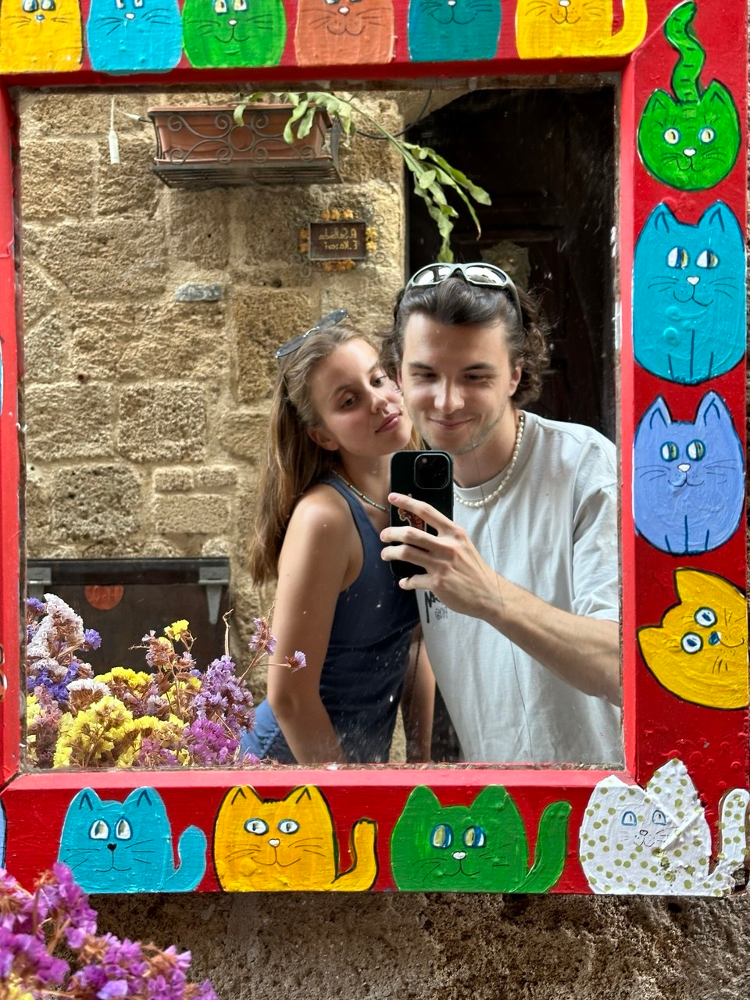

Приглашаем вас на свадьбу — на остров Родос, туда, где море, солнце и древние храмы.
Когда1 октября 2026
ГдеЛиндос, Родос
Дресс-кодСредиземноморский

Даша & Паша
«Ξένος» — по-гречески это и гость, и друг. Мы очень хотим, чтобы путь к нам был лёгким — здесь собрано всё, что пригодится: как получить визу, как добраться и что посмотреть на Родосе.